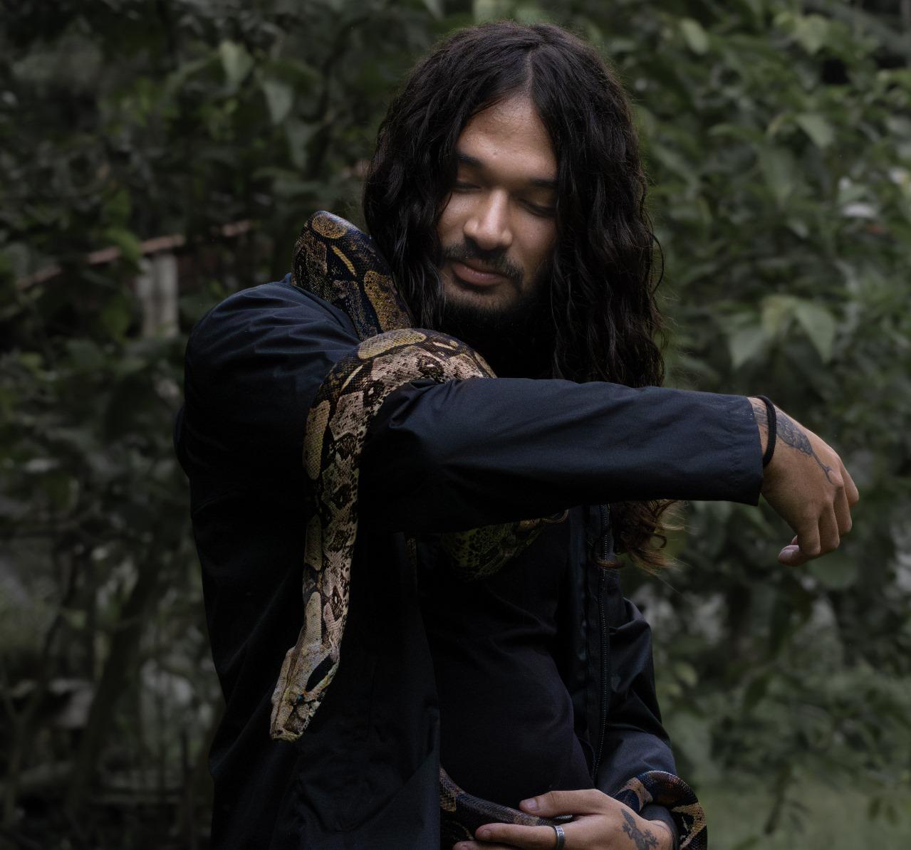
Luan
Fundador e biólogo

Vale Histórico Paulista · Serra da Mantiqueira
Entre trilhas, riachos e florestas, acompanhamos anfíbios e répteis para aproximar pessoas da biodiversidade que vive por aqui.
Projeto
A HerpetoMantiqueira conecta divulgação científica, registros de biodiversidade e vivências em campo. Nosso foco é valorizar a herpetofauna da Mantiqueira e do Vale Histórico com informação clara, beleza e responsabilidade.
Fauna
Algumas espécies chamam atenção pela cor; outras, pelo silêncio. Cada registro ajuda a contar um pedaço da paisagem.
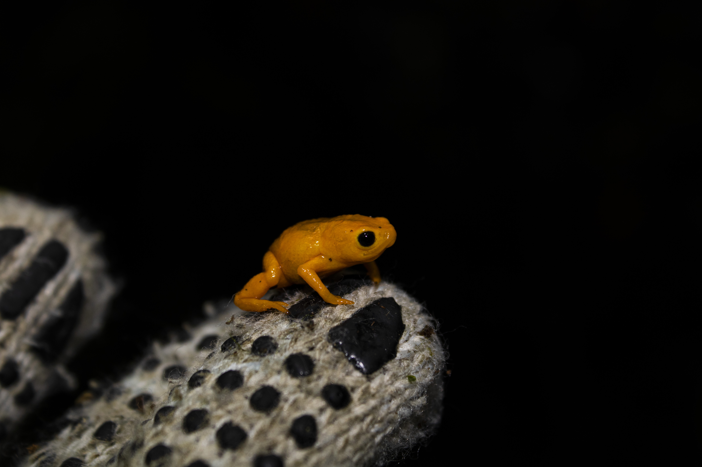
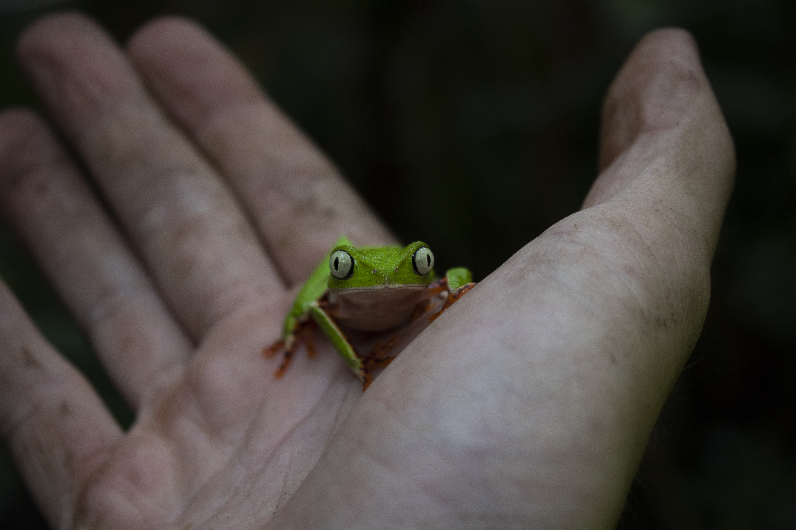
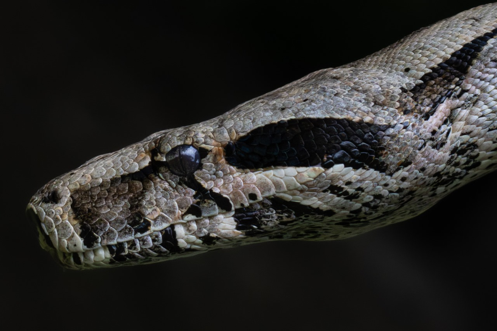
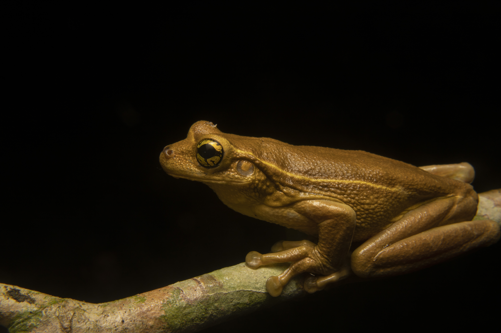
Em campo
Caminhar devagar, escutar os ambientes e registrar com cuidado. O campo é onde a paisagem deixa de ser cenário e passa a contar sua própria história.
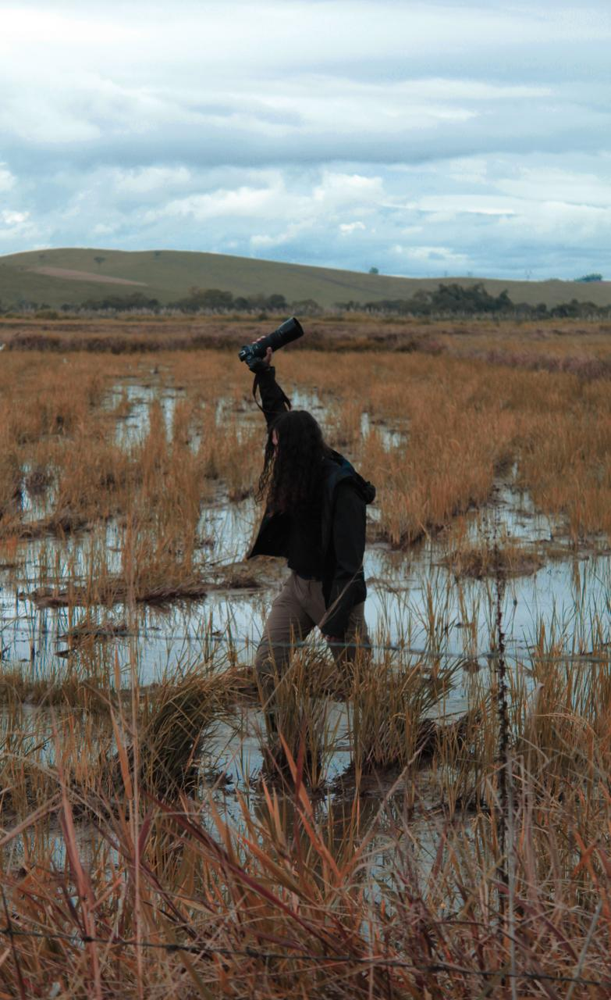


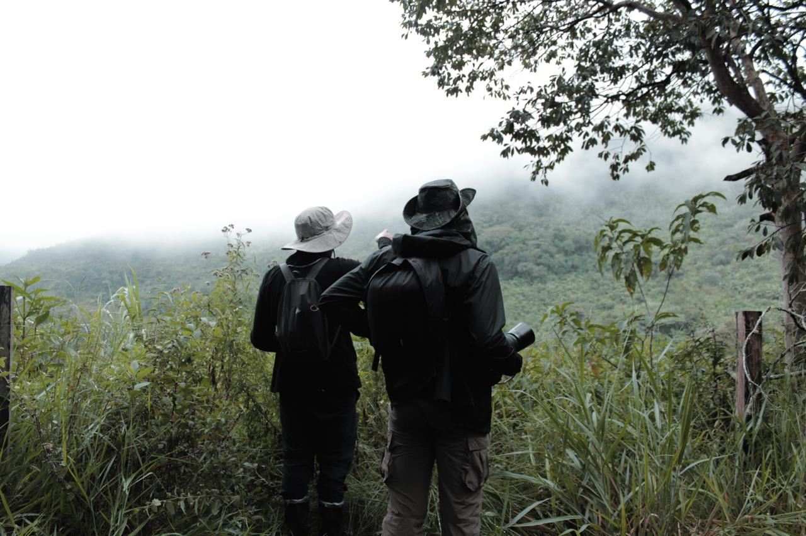
Equipe
Ciência, educação e curiosidade compartilhadas por quem escolheu olhar a natureza mais de perto.

Fundador e biólogo
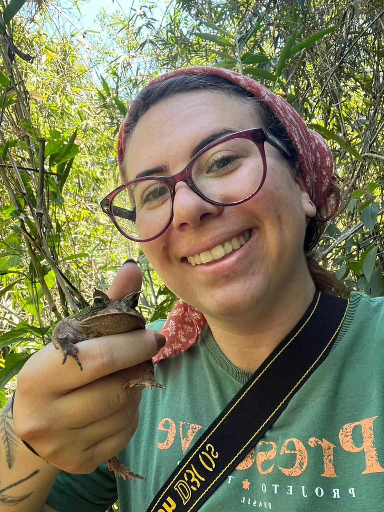
Bióloga
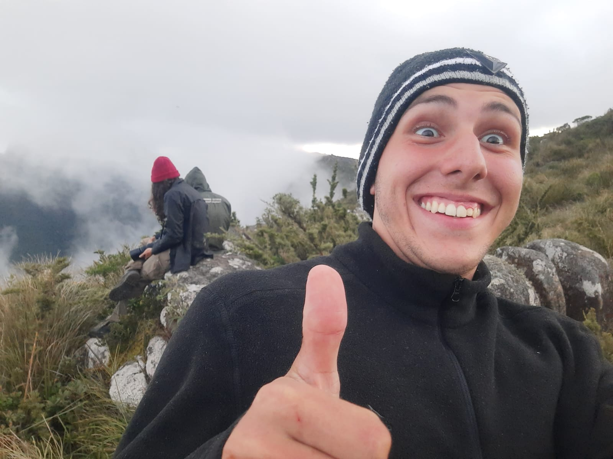
Biólogo
Parceiros
Este espaço está pronto para receber instituições, iniciativas e pessoas que caminham ao lado da HerpetoMantiqueira.
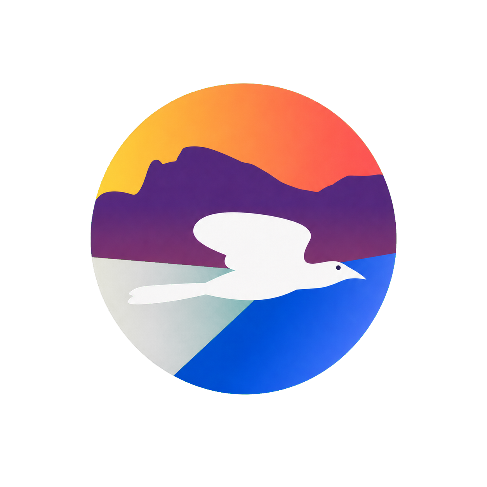
Batedor BirdingParceiro · Instagram ↗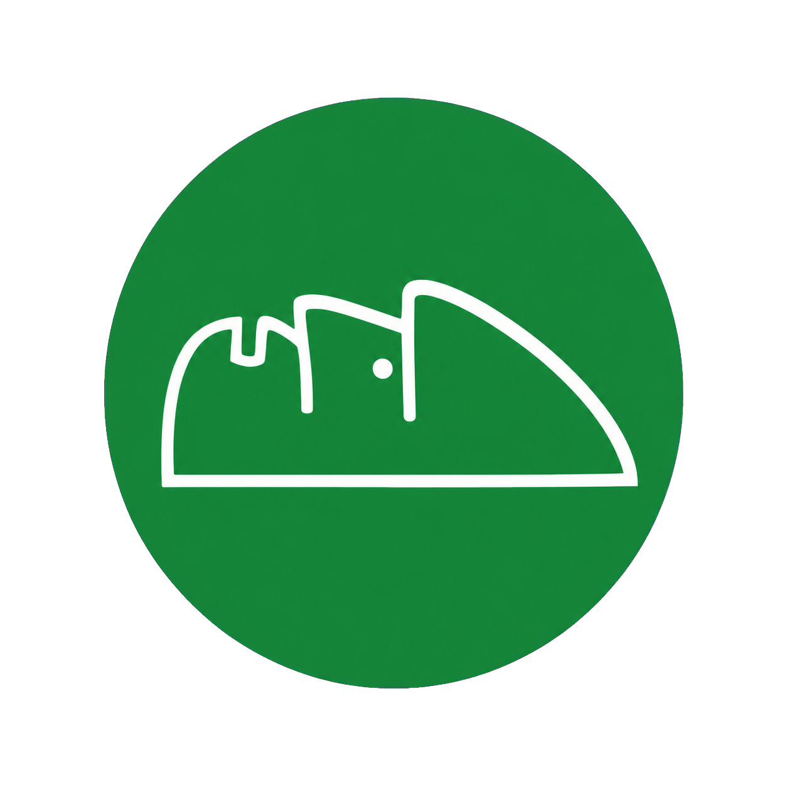
RPPN Gigante do ItaguaréParceiro · Instagram ↗Ferramentas & recursos
Uma área preparada para materiais do projeto, conteúdos especiais e ferramentas gratuitas para a comunidade.
Assistente científico conversacional para ecologia, herpetologia, conservação e dados de biodiversidade.
Conhecer ferramentaCaderno de campo digital para biodiversidade, com GPS, mídias, trilhas e exportação científica.
Conhecer ferramentaInterface local e segura que conecta agentes de IA ao QGIS com permissões, logs e rastreabilidade.
Conhecer ferramentaPlugin QGIS para planejamento preliminar de trilhas, acessos e corredores por análise topográfica.
Conhecer ferramentaÁlbum educativo com figurinhas, fotos reais e fichas acessíveis sobre espécies e microhabitats.
Abrir álbumFerramentas abertas da HerpetoMantiqueira para apoiar projetos, estudos e divulgação.
Links em breveUma área para extensões e materiais reutilizáveis da comunidade.
Links em breveNovos recursos gratuitos poderão ser publicados aqui conforme o projeto cresce.
Em atualização
Developed by: MACIEL, L. S. C.

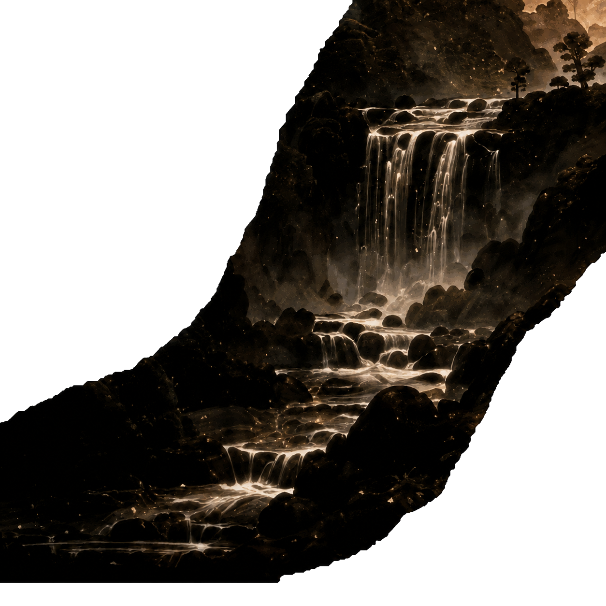